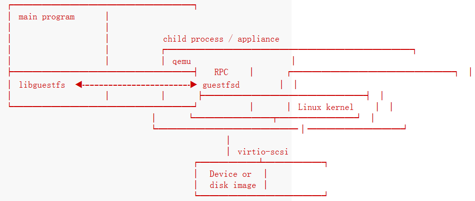

libguestfs是访问并修改虚拟机磁盘映像的一系列工具。
它能让几乎任何磁盘映像imaginable。
它是一个C语言库。
下面是其体系结构。
1.架构

libguestfs的实现方式是通过使用qemu运行一个appliance（一种特殊类型的小虚拟机）。qemu作为主程序的一个子进程运行。
链接到主程序的library创建子进程，然后在guestfs_launch函数中创建appliance。
在appliance内部是一个linux内核、一堆完整的用户空间工具（例如LVM、ext2程序）和一个守护进程guestfsd（以下使用daemon代替）。library告诉daemon使用远程程序调用（RPC）。libguestfs API调用和对守护进程的RPC调用之间通常存在一对一的对应关系。最后，disk image被附加到qemu进程，该进程将设备的linux内核对设备的访问转换为对映像的访问。
2.状态机
libguestfs使用状态机来建模子进程：

正常的状态转换流程：
CONFIG：处理程序已被创建，但是还没有子进程LAUNCHING：子进程正在启动READY：此时意味着appliance已经启动，可以发送动作并被子进程执行
guest（指虚拟机映像image，可通过virt-builder创建）可能会被杀掉（函数 guestfs_kill_subprocess），或在任何时间异步地死掉（一些内部错误），导致状态回到CONFIG。
配置命令（例如函数 guestfs_set_path）只能在CONFIG状态发出。
API提供了从CONFIG经过LAUNCHING到READY的调用：函数guestfs_launch会阻塞直到子进程是READY状态（或者失败、超时）。函数guestfs_launch在运行的时候在内部会将状态从CONFIG变为LAUNCHING。
API动作（例如函数 guestfs_mount）只能在READY状态的时候发送。这些API调用会阻塞住直到命令被执行。同一时间只会执行一个命令。
最后，子进程发送异步信息到主程序，例如内核日志信息。你可以注册一个回调函数来接收这些信息。
3.内部
3.1 appliance启动进程
开启调试模式，在命令行头部添加环境变量参数：LIBguestFS_TRACE=1 LIBguestFS_DEBUG=1。
LIBguestFS_TRACE=1 LIBguestFS_DEBUG=1 virt-v2v -i ova centos2.ova -o local -os /var/tmp/ -of qcow2 2>&1 | tee virt-v2v.log
3.1.1 创建 appliance
调用supermin --build创建：kernel、small initrd、appliance。详细的supermin说明：supermin(1)。
appliance默认存储在/var/tmp/.guestfs-<UID>下。
3.1.2 开启 qemu 并启动 kernel
调用qemu启动kernel。
3.1.3 运行initrd
supermin --build构建了一个小的initrd，它的作用是为了appliance能被挂载和启动去载入足够的内核模块。
initrd是一个cpio文件，在/var/tmp/.guestfs-<UID>/appliance.d/initrd，initrd启动时可以看到内核载入信息。
3.1.4 找到并挂载appliance设备
appliance是一个稀疏文件，包含了ext2文件系统（包含了一个linux操作系统）。正常情况下被称作/var/tmp/.guestfs-<UID>/appliance.d/root。
libguestfs首先检查被qemu暴露的常规磁盘（eg. /dev/vda），最后一个被加到qemu中的是appliance（eg. /dev/vdb）。
于是initrd最后的工作是定位到appliance磁盘，挂载它，转换root到appliance，然后从appliance运行/init。
3.1.5 初始化appliance
现在appliance自行初始化。包括启动某些线程，可能会打印调试信息，最终运行daemon。
3.1.6 daemon
最终appliance中运行daemon。
daemon期待看到被qemu公开的命名的virtio-serial端口（在/dev/virtio-ports/下），然后在另一端连接到library。
daemon连接到这个端口并发送关键字guestFS_LAUNCH_FLAG来初始化通信协议。
3.2 通信协议
在qemu虚拟机内运行的library与daemon之间通信的协议，在XDR的基础上构建。
详细的格式在common/protocol/guestfs_protocol.x中。
存在两种通信情况：
- 普通函数，不带有任何
FileIn和FileOut参数，使用非常简单的request/reply信息来处理。 - 另一种就是带有一个
FileIn或FileOut参数的函数，在第一种的基础上，信息可能带有使用分块编码发送的文件。
3.2.3 普通函数
请求信息如下：
total length (header + arguments, but not including the length word itself)
struct guestfs_message_header (encoded as XDR)
struct guestfs_<foo>_args (encoded as XDR)
total length使daemon分配一个固定大小的缓存区，其中可以容纳消息的其余部分。总长度不超过guestFS_MESSAGE_MAX（当前是4MB）。
许多函数不带有参数，此时最后一个参数被忽略。
头部guestfs_message_header包含了数字（guestfs_proc），它是接收器知道参数结构体类型的方式，或者不知道是什么类型。
在头信息中的bitmask（位掩码）说明哪些可选参数guestfs_<foo>_args是有用的。bitmask也会检查是否包含了daemon不知道的bits，这会引起拒绝调用。
回应信息如下：
total length (header + ret, but not including the length word itself)
struct guestfs_message_header (encoded as XDR)
struct guestfs_<foo>_ret (encoded as XDR)
与请求信息类似，如果发生了错误，在头信息中会设置一个标志，回应信息会改变成如下所示：
total length (header + error, but not including the length word itself)
struct guestfs_message_header (encoded as XDR)
struct guestfs_message_error (encoded as XDR)
3.2.4 带有FileIn参数的函数
带有此参数表明转换一个文件到guest。
请求信息如下：
total length (header + arguments,
but not including the length word itself,
and not including the chunks)
struct guestfs_message_header (encoded as XDR)
struct guestfs_<foo>_args (encoded as XDR)
sequence of chunks for FileIn param #0
sequence of chunks for FileIn param #1 etc.
sequence of chunks：
length of chunk (not including length word itself)
struct guestfs_chunk (encoded as XDR)
length of chunk
struct guestfs_chunk (encoded as XDR)
...
length of chunk
struct guestfs_chunk (with data.data_len == 0)
最后一个chunk会添加一个标志来表明是成功完成还是提前取消。
写入的时候没有任何一个函数有超过一个FileIn的参数，虽然理论上支持。
library (sender) 和 daemon (receiver) 都可能取消转换。library的做法是通过设置上述的chunk标志位。当daemon看到后，它会取消整个RPC，不发送也不回应，然后读取下一次请求。daemon的做法是向socket写入一个关键字guestFS_CANCEL_FLAG，在转换的时候library会监听，当它收到这个关键字的时候，会通过上述方式取消转换。即使在转换完成时（library完成写入并且开始监听回应信息）亦可以发送该关键字，这个虚假的取消标记不会与回应消息混淆。？？？
该协议允许传输任意大小的文件，以及预先不知道大小的文件（来自pipe或socket）。因为chunk很小，所以library和daemon都不需要在内存中保留太多内容。
3.2.5 带有FileOut参数的函数
与FileIn完全相同，只是两者角色互换。
total length (header + ret,
but not including the length word itself,
and not including the chunks)
struct guestfs_message_header (encoded as XDR)
struct guestfs_<foo>_ret (encoded as XDR)
sequence of chunks for FileOut param #0
sequence of chunks for FileOut param #1 etc.
3.3 初始化信息
daemon启动时它会发送一个初始化关键字guestFS_LAUNCH_FLAG表明guest和daemon是活动的。这是函数guestfs_launch等待的内容。
3.4 进展通知信息
daemon可能在任何时间发送进展通知信息。这些信息区分于其它信息的地方在于：正常长度单词length被替换为guestFS_PROGRESS_FLAG，后跟固定大小的进展信息。
如果注册过回调，library将它们转化到进展回调（参阅 "guestFS_EVENT_PROGRESS"），否则丢弃之。
daemon限制了这种信息发送频率（see daemon/proto.c:notify_progress）。不是所有的调用都会产生进展信息。
3.5 fixed appliance
libguestfs或libguestfs tools运行时，它们为一个appliance寻找一个路径。这个路径被构建到libguestfs中，或使用环境变量LIBguestFS_PATH来设置。
正常情况下一个supermin appliance位于"SUPERMIN APPLIANCE"。libguestfs通过运行supermin --build将其重建为完整的appliance。
但是，一个简易的fixed appliance也能使用。libguestfs通过查找包含以下所有文件的路径上的目录来检测它：
- kernel
- initrd
- root
- README.fixed
如果找到了fixed appliance，libguestfs会完全跳过supermin，然后使用固定设备中的kernel、initrd和root disk运行虚拟机（使用qemu或当前的后台，see "BACKEND"）。